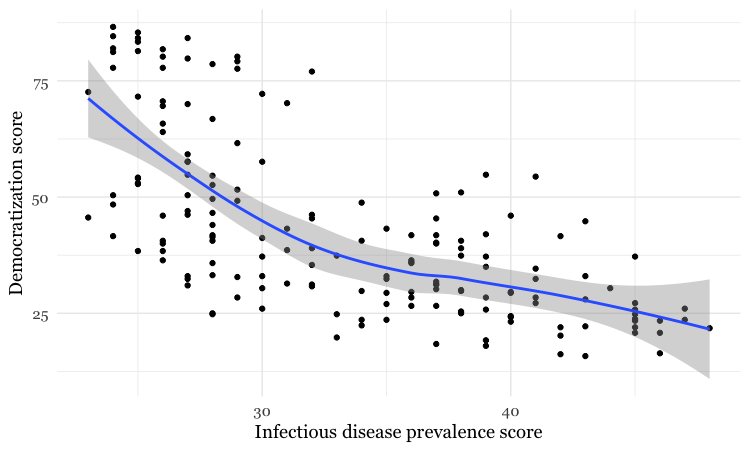
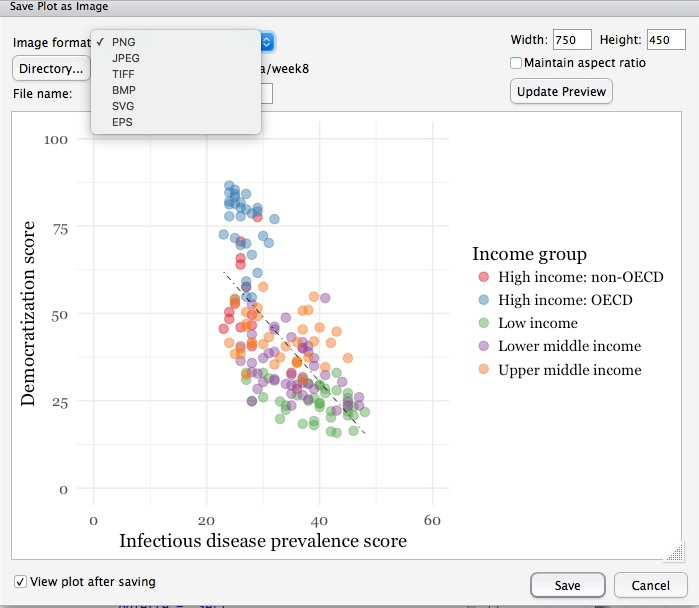
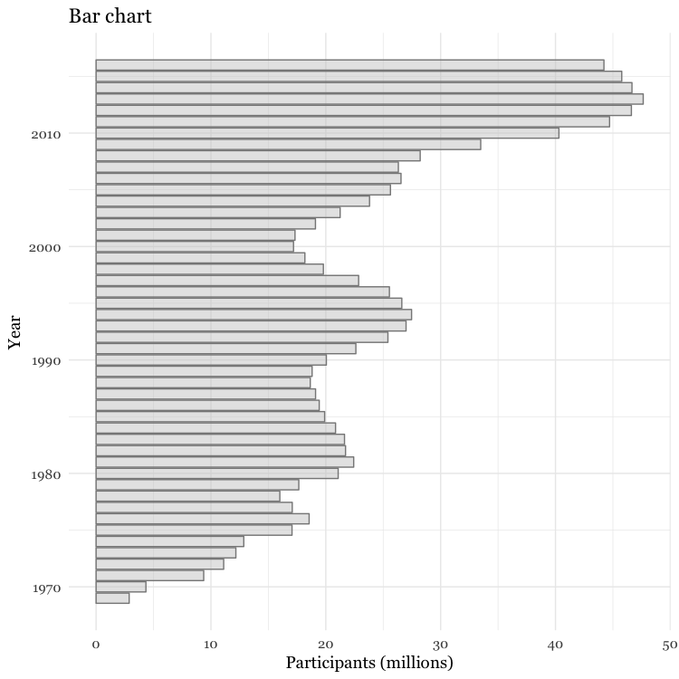
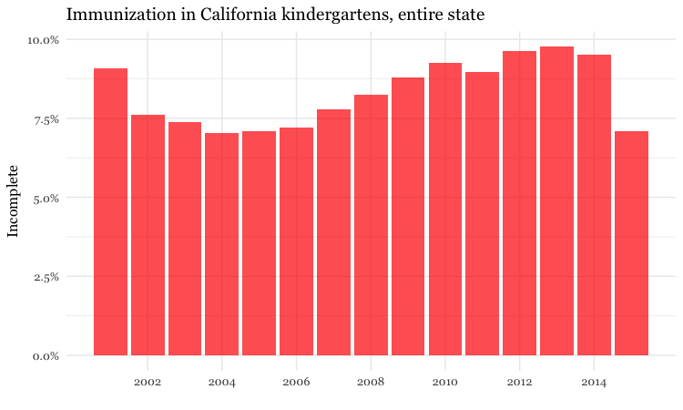
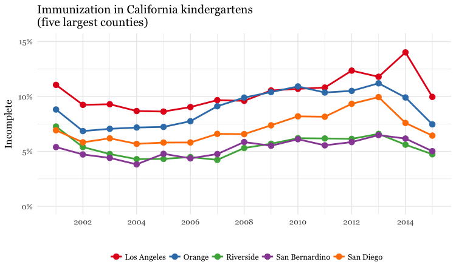
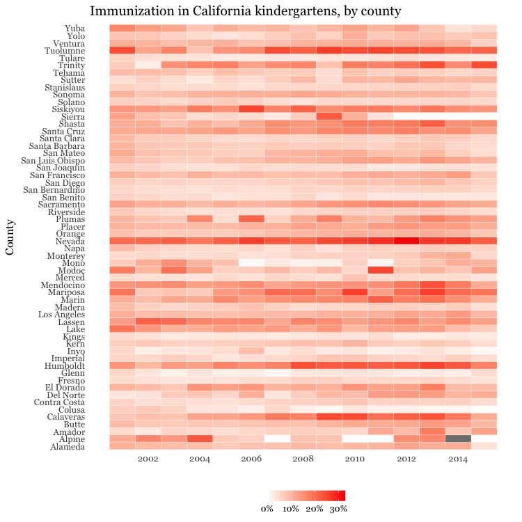
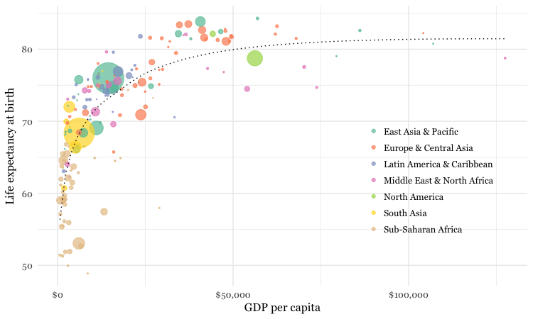
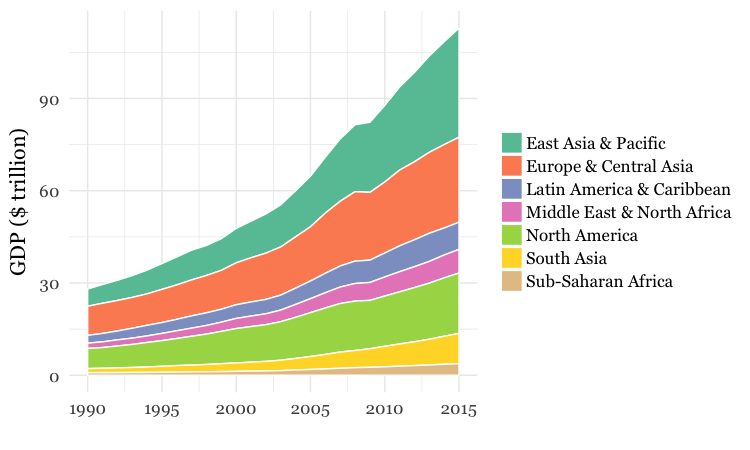

Making static graphics with R
In today’s class, we will begin to explore how R can be used to make graphics from data, making customized static graphics with the ggplot2 package. This is part of Hadley Wickham’s tidyverse, so you already have it installed from the previous class.
The data we will use today
Download the data for this session from here, unzip the folder and place it on your desktop. It contains the following files:
disease_democ.csvData illustrating a controversial theory suggesting that the emergence of democratic political systems has depended largely on nations having low rates of infectious disease, from the Global Infectious Diseases and Epidemiology Network and Democratization: A Comparative Analysis of 170 Countries, as used in week 1.food_stamps.csvU.S. Department of Agriculture data on the number ofparticipants, in millions, andcosts, in $ billions, of the federal Supplemental Nutrition Assistance Program from 1969 to 2016.kindergarten.csvData from the California Department of Public Health, documenting enrollment and the number of children with complete immunizations at entry into kindergartens in California from 2001 to 2015. Contains the following variables:districtSchool district.sch_codeUnique identifying code for each school.pub_privWhether school is public or private.schoolSchool name.enrollmentNumber of children enrolled.completeNumber of children with complete immunizations.start_yearYear of entry (for the 2015-2016 school year, for example, this would be 2015).
nations.csvData from World Bank World Development Indicators portal, giving data on population, GDP per capita, life expectancy, birth rate, neonatal mortality rate, region and income group for the world’s nations, from 1990 onwards, as used in week 3.
Introducing ggplot2 and the grammar of graphics
The “gg” in ggplot2 stands for “grammar of graphics,” an approach to drawing charts devised by the statistician Leland Wilkinson. Rather than thinking in terms of finished charts like a scatter plot or a column chart, it starts by defining the coordinate system (usually the X and Y axes of a cartesian system), maps data onto those coordinates, and then adds layers such as points, bars and so on. This is the logic behind ggplot2 code.
Some key things to understand about ggplot2:
ggplotThis is the master function that creates a ggplot2 chart.aesThis function, named for “aesthetic mapping,” is used whenever data values are mapped onto a chart. So it is used when you define which variables are plotted onto the X and Y axes, and also if you want to change the size or color of parts of the chart according to values for a variable.geomAll of the functions that add layers to a chart start withgeom, followed by an underscore, for examplegeom_point()orgeom_bar(). The code in the parentheses for anygeomlayer styles the items in that layer, and can includeaesmappings of values from data.themeThis function modifies the appearance of elements of a plot, used, for example, to set size and font face for text, the position of a legend, and so on.scaleFunctions that begin withscale, followed by an underscore, are used to modify the way anaesmapping of data appears on a chart. They can change the axis range, for example, or specify a color palette to be used to encode values in the data.+is used each time you add a layer, a scale, a theme, or elements like axis labels and a title After a+you can continue on the same line of code or move the next line. I usually write a new line after each+, which makes the code easier to follow.
Make scatter plot from disease and democracy data
We’ll start by making and modifying a scatter plot from the infections disease and democracy data, which we first need to load into the environment.
# load disease and democracy data
disease_democ <- read_csv("disease_democ.csv")
Map variables in the data onto the X and Y axes
Copy this code into your R script and run:
# map values in data to X and Y axes
ggplot(disease_democ, aes(x = infect_rate, y = democ_score))
The code within the parentheses for the ggplot function defines the data frame to be used, followed by the aes mapping of variables in the data to the chart’s X and Y axes.
The following chart should appear in the Plots panel at bottom right:

The axis ranges are automatically set to values in the data, but at this point there is just a blank chart grid, because we haven’t added any geom layers to the chart.
Change the axis labels
By default, the axis labels will be the names of the variables in the data. But it’s easy to customize, using the following code:
# customize axis labels
ggplot(disease_democ, aes(x = infect_rate, y = democ_score)) +
xlab("Infectious disease prevalence score") +
ylab("Democratization score")

Change the theme
The default gray theme of ggplot2 has a rather academic look. See here and here for how to use the theme option to customize individual elements of a chart. However, for my charts, I typically use one of the ggplot2 built-in themes, and then customize the fonts.
# Change the theme
ggplot(disease_democ, aes(x = infect_rate, y = democ_score)) +
xlab("Infectious disease prevalence score") +
ylab("Democratization score") +
theme_minimal(base_size = 14, base_family = "Georgia")

Notice how the base_family and base_size can be used with a built-in theme to change font face and size. R’s basic fonts are fairly limited (run names(postscriptFonts()) to view those available). However, you can use the extrafonts package to make other fonts available.
If you wish to develop your own customized theme, you can use this web app to select your theme options. When you are statisfied with the appearance of the chart in the app, click the R script for theme (run every R session) button to download your theme as an R script.
If you then load and run this script at the start of your R session, your ggplot2 charts for that session will use the downloaded theme.
Save the basic chart template
You can save a ggplot2 chart as an object in your environment using the <- assignment operator. So we’ll do that here to save the basic template, with no geom layers.
# save chart template, and plot
disease_democ_chart <- ggplot(disease_democ, aes(x = infect_rate, y = democ_score)) +
xlab("Infectious disease prevalence score") +
ylab("Democratization score") +
theme_minimal(base_size = 14, base_family = "Georgia")
There should now be an object of type gg in your Environment called disease_democ_chart.
The plot function will plot a saved ggplot2 object.
# plot saved chart template
plot(disease_democ_chart)
Add a layer with points
This code will add a geom layer with points to the template:
# add a layer with points
disease_democ_chart +
geom_point()

This is exactly the same as running all the code saved in the gg object with the new line.
# themed scatterplot
ggplot(disease_democ, aes(x = infect_rate, y = democ_score)) +
xlab("Infectious disease prevalence score") +
ylab("Democratization score") +
theme_minimal(base_size = 14, base_family = "Georgia") +
geom_point()
Add a layer with a smoothed trend line, fitted to the data
# add a trend line
disease_democ_chart +
geom_point() +
geom_smooth()

By default, the geom_smooth function plots a curve through the data using a method called locally-weighted scatterplot smoothing, and adds a ribbon giving the standard error, a measure of uncertainty around the line of best fit through the data.
Customize the two layers we’ve added to the chart
The following code modifies the two geom layers to change their appearance.
# customize the two geom layers
disease_democ_chart +
geom_point(size = 3, alpha = 0.5) +
geom_smooth(method = lm, se=FALSE, color = "red")

In the geom_point layer, we have increased the size of each point, and reduced its transparency using alpha.
In the geom_smooth function, we have changed the color of the line, removed the ribbon showing the se or “standard error,” a measure of the uncertainty surrounding the fit to the data, and changed the method used to fit the data to a linear regression, or linear model (lm).
When setting colors in ggplot2 you can use their R color names, or their HEX values. This code will produce the same result:
# customize the two geom layers
disease_democ_chart +
geom_point(size = 3, alpha = 0.5) +
geom_smooth(method = lm, se=FALSE, color = "#FF0000")
Until you are familiar with the options for each geom, you will need to look up how to change the appearance of each layer: Follow the links for each geom from here.
The following code customizes the trend line further, and includes an aes mapping to set the color of the points to that they reflect the categorical variable of World Bank income group.
# customize again, coloring the points by income group
disease_democ_chart +
geom_point(size = 3, alpha = 0.5, aes(color = income_group)) +
geom_smooth(method = lm, se = FALSE, color = "black", linetype = "dotdash", size = 0.3)

Notice how the aes function colors the points by values in the data, rather than setting them to a single color. ggplot2 recognizes that income_group is a categorical variable, and uses its default qualitative color palette.
Now run this code, to see the different effect of setting the aes color mapping for the entire chart, rather than just one geom layer.
# color the entire chart by income group
ggplot(disease_democ, aes(x = infect_rate, y = democ_score, color=income_group)) +
xlab("Infectious disease prevalence score") +
ylab("Democratization score") +
theme_minimal(base_size = 14, base_family = "Georgia") +
geom_point(size = 3, alpha = 0.5) +
geom_smooth(method=lm, se=FALSE, linetype= "dotdash", size = 0.3)

Because here we mapped the variable income group to color for the whole chart, and not just the points, it also affects the geom_smooth layer, so a separate trend line, colored the same as the points, is calculated for each income_group.
Set the axis ranges, and use a different color palette
Now let’s return to the mapping the colors for income group just for the points, and customize further.
disease_democ_chart +
geom_point(size = 3, alpha = 0.5, aes(color = income_group)) +
geom_smooth(method = lm, se = FALSE, color = "black", linetype = "dotdash", size = 0.3) +
scale_x_continuous(limits=c(0,60)) +
scale_y_continuous(limits=c(0,100)) +
scale_color_brewer(palette = "Set1",
name="Income group",
breaks=c("High income: OECD","High income: non-OECD","Upper middle income","Lower middle income","Low income"))

Notice how the first two scale functions are used to set the ranges for the axis, which are entered as a list, using the c function.
We also applied a ColorBrewer qualitative palette using the scale_color_brewer function, and naming the desired palette. You can add the text you want to appear as a legend title using name, and specify the order in which the legend items appear using breaks).
I separated this code inside the parantheses of the scale_color_brewer function into three lines to make it easier to read.
Save your charts
Having made a series of charts, you can browse through them using the blue arrows at the top of the Plots tab in the panel at bottom right. The broom icon will clear all of your charts; the icon to its immediate left remove the chart in the current view.
You can export any chart by selecting Export>Save as Image... in the Plots tab. At the dialog box, you can select the desired image format, and size.
If you wish to subsquently edit or annotate the chart in a vector graphics editor such as Abode Illustrator, export as an SVG file. To do this on the Mac, you will first need to install XQuartz.

# save final disease and democracy chart
final_disease_democ_chart <- disease_democ_chart +
geom_point(size = 3, alpha = 0.5, aes(color = income_group)) +
geom_smooth(method = lm, se = FALSE, color = "black", linetype = "dotdash", size = 0.3) +
scale_x_continuous(limits=c(0,60)) +
scale_y_continuous(limits=c(0,100)) +
scale_color_brewer(palette = "Set1",
name="Income group",
breaks=c("High income: OECD","High income: non-OECD","Upper middle income","Lower middle income","Low income"))
Make a series of charts from food stamps data
Now we will explore a series of other geom functions using the food stamps data.
Load the data, map variables onto the X and Y axes, and save chart template
# load data
food_stamps <- read_csv("food_stamps.csv")
# save basic chart template
food_stamps_chart <- ggplot(food_stamps, aes(x = year, y = participants)) +
xlab("Year") +cl
ylab("Participants (millions)") +
theme_minimal(base_size = 14, base_family = "Georgia")
Make a line chart
# line chart
food_stamps_chart +
geom_line()

Customize the line, and add a title
# customize the line, add a title
food_stamps_chart +
geom_line(size = 1.5, color = "red") +
ggtitle("Line chart")

The function ggtitle adds a title to the chart.
Add a second layer to make a dot-and-line chart
# Add a second layer to make a dot-and-line chart
food_stamps_chart +
geom_line() +
geom_point() +
ggtitle("Dot-and-line chart")

Make a column chart, then flip its coordinates to make a bar chart
# Make a column chart
food_stamps_chart +
geom_bar(stat = "identity", color = "white") +
ggtitle("Column chart")

geom_bar works a little differently to the geoms we have considered previously. If you have not mapped data values to the Y axis with aes, its default behavior is to set the heights of the bars by counting the number of records for values along the X axis. If you have mapped a variable to the Y axis, and want the heights of the bars to represent values in the data, you must use stat="identity".
The difference between color and fill
In the code above, you may be confused that the color is set to white, yet the bars are black.
For some geoms, notably geom_bar, you can set color for their outline as well as the interior of the shape. Here, color refers to the outline, fill to the interior of the shape.
# set color and fill
food_stamps_chart +
geom_bar(stat = "identity",
color = "#888888",
fill = "#CCCCCC",
alpha = 0.5) +
ggtitle("Column chart")

Make a bar chart
You can make a bar chart using the same code for a column chart, and then using coord_flip to switch the X and Y axes.
# Make a bar chart
food_stamps_chart +
geom_bar(stat = "identity",
color = "#888888",
fill = "#CCCCCC",
alpha = 0.5) +
ggtitle("Bar chart") +
coord_flip()

Other useful packages to use with ggplot2
The ggplot2 extensions page documents a series of packges that extend the capabilities of ggplot2. See the gallery.
The scales package allows you to format axes to display as currency, as percentages, or so that large numbers use commas as thousands separators.
Putting it all together
Here are some examples of using dplyr, ggplot2, and scales to process data and make charts.
Load California immunization and immunization data
# load required package
library(scales)
# load data
immun <- read_csv("kindergarten.csv")
Calculate number of children with incomplete immunizations for each school
Preparing the data requires some initial work using dplyr.
The data has enrollment numbers for each school and year, the number of children with complete immunizations. But we want to chart the percentage incomplete, so first we need to create a new column with the incomplete data.
# create new column with numbers of children with incomplete immunizations
immun <- immun %>%
mutate(incomplete = enrollment - complete)
Calculate proportion of children with incomplete immunizations for the entire state, and by county.
To do this we need to group_by and summarize to add the incomplete numbers, then use mutate to calculate proportions from the summarized data, which we’ll call proport_incomplete.
# proportion incomplete, entire state, by year
immun_year <- immun %>%
group_by(start_year) %>%
summarize(enrollment = sum(enrollment, na.rm=TRUE),
incomplete = sum(incomplete, na.rm=TRUE)) %>%
mutate(proport_incomplete = incomplete/enrollment)
# proportion incomplete, by county and year
immun_counties_year <- immun %>%
group_by(county,start_year) %>%
summarize(enrollment = sum(enrollment, na.rm=TRUE),
incomplete = sum(incomplete, na.rm=TRUE)) %>%
mutate(proport_incomplete = incomplete/enrollment)
Notice the use of na.rm = TRUE with the sum function. This is needed when summarizing data using functions like sum, mean, and median if there are any missing values in the data. It is a good idea to get into the habit if including it when using these functions.
Identify the five counties with the largest enrollment over all years, then filter the counties summary data to include these counties only
To do this, we will sum the enrollment numbers by county across all the years, sort the counties in descending order, filter for the top five using head(5) and then select the county names.
Having done that, we can use a semi_join to filter the counties summary data.
# identify the five counties with the largest enrollment over all years
top5 <- immun %>%
group_by(county) %>%
summarize(enrollment = sum(enrollment, na.rm = TRUE)) %>%
arrange(desc(enrollment)) %>%
head(5) %>%
select(county)
# proportion incomplete, top 5 counties for enrollment, by year
immun_top5_year <- semi_join(immun_counties_year, top5)
Make a bar chart showing the percentage of children with incomplete immunization for the entire state, over time
Now we can make some charts. In the ggplot2 code that follows, we will use the scales package to display proport_incomplete as percentages.
# bar chart by year, entire state
ggplot(immun_year, aes(x = start_year, y = proport_incomplete)) +
geom_bar(stat = "identity", fill = "red", alpha = 0.7) +
theme_minimal(base_size = 12, base_family = "Georgia") +
scale_y_continuous(labels = percent) +
scale_x_continuous(breaks = c(2002,2004,2006,2008,2010,2012,2014)) +
xlab("") +
ylab("Incomplete") +
ggtitle("Immunization in California kindergartens, entire state") +
theme(panel.grid.minor.x = element_blank())

Here, the code scale_y_continuous(labels = percent) uses labels = percent from scales to format the decimal fractions in proport_incomplete as percentages.
The code scale_x_continuous(breaks = c(2002,2004,2006,2008,2010,2012,2014)) manually sets the positions of the X axis tick labels, rather than accepting the default values chosen by ggplot2.
Make a dot and line chart showing the percentage of children with incomplete immunization for the five counties with the highest kindergarten enrollment, over time
# dot and line chart, top5 counties, by year
ggplot(immun_top5_year, aes(x = start_year, y = proport_incomplete, color = county)) +
scale_color_brewer(palette = "Set1", name = "") +
geom_line(size=1) +
geom_point(size=3) +
theme_minimal(base_size = 12, base_family = "Georgia") +
scale_y_continuous(labels = percent, limits = c(0,0.15)) +
scale_x_continuous(breaks = c(2002,2004,2006,2008,2010,2012,2014)) +
xlab("") +
ylab("Incomplete") +
theme(legend.position = "bottom") +
ggtitle("Immunization in California kindergartens\n(five largest counties)")

Make a heat map showing the percentage of children with incomplete immunization for each California county, over time
# heat map, all counties, by year
ggplot(immun_counties_year, aes(x = start_year, y = county)) +
geom_tile(aes(fill = proport_incomplete), colour = "white") +
scale_fill_gradient(low = "white",
high = "red",
name="",
labels = percent) +
scale_x_continuous(breaks = c(2002,2004,2006,2008,2010,2012,2014)) +
theme_minimal(base_size = 12, base_family = "Georgia") +
xlab("") +
ylab("County") +
theme(panel.grid.major = element_blank(),
panel.grid.minor = element_blank(),
legend.position="bottom",
legend.key.height = unit(0.4, "cm")) +
ggtitle("Immunization in California kindergartens, by county")

This code uses geom_tile to make a heat map, and scale_fill_gradient to create a color gradient by manually setting the colors for the start and end of the scale.
The theme function removes all grid lines from the chart, moves the legend to the bottom, and manually sets its height in centimeters.
Make a bubble chart showing the relationship between GDP per capita and life expectancy for the world’s nations in 2015
Here’s another example, to further illustrate the diversity of charts that you can make by combining dplyr and ggplot2 to process and chart data.
# load data
nations <- read_csv("nations.csv")
# filter for 2015 data only
nations2015 <- nations %>%
filter(year == 2015)
# make bubble chart
ggplot(nations2015, aes(x = gdp_percap, y = life_expect)) +
xlab("GDP per capita") +
ylab("Life expectancy at birth") +
theme_minimal(base_size = 12, base_family = "Georgia") +
geom_point(aes(size = population, color = region), alpha = 0.7) +
scale_size_area(guide = FALSE, max_size = 15) +
scale_x_continuous(labels = dollar) +
stat_smooth(formula = y ~ log10(x), se = FALSE, size = 0.5, color = "black", linetype="dotted") +
scale_color_brewer(name = "", palette = "Set2") +
theme(legend.position=c(0.8,0.4))

In this code, scale_size_area ensures that the size of the circles scales by their area according to the population data, up to the specified max_size; guide = FALSE within the brackets of this function prevents a legend for size being drawn.
labels = dollar from scales formats the X axis labels as currency in dollars.
stat_smooth works like geom_smooth but allows you to use a formula to specify the type of curve to use for to trend line fitted to the data, here a logarithmic curve.
Assignment
- Use dplyr and ggplot2 to process data and draw these two charts from the
nationsdataset:


For both charts, you will first need to create a new variable in the data, using
mutatefrom dplyr, giving the GDP of each country in trillions of dollars, by multiplyinggdp_percapbypopulationand dividing by a trillion (one, followed by twelve zeros).For the first chart, you will need to
filterthe data with dplyr for the four desired countries. When making the chart with ggplot2 you will need to add bothgeom_pointandgeom_linelayers, and use theSet1ColorBrewer palette.For the second chart, using dplyr you will need to
group_byregion and year, and then summarize usingsum. There will be null values, or NAs, in this data, so you will need to usena.rm = TRUE. When drawing the chart with ggplot2, you will need to usegeom_areaand theSet2ColorBrewer palette. Think about the difference betweenfillandcolorwhen making the chart, and put a very thin white line around each area.
Further reading
R Graphics Cookbook by Winston Chang
(Chang also has a helpful website with much of the same information, available for free.)
ggplot2: Elegant Graphics For Data Analysis by Hadley Wickham
Stack Overflow
For any work involving code, this question-and-answer site is a great resource for when you get stuck, to see how others have solved similar problems. Search the site, or browse R questions